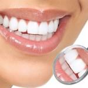

Adresa:
Titova 5, 71000
Sarajevo
Telefon:
+387 33 472 262
+387 33 376 652
Radno vrijeme:
Pon – Pet 09 – 17h
Sub 09 – 14h

SVIM POTENCIJALNIM PACIJENTIMA NUDIMO BESPLATAN PREGLED I KONSULTACIJE UZ BEZBOLNU TERAPIJU PRI ZAHVATU.
BUDITE SLOBODNI DA NAS KONTAKTIRATE
MOGUĆNOST PLAĆANJA NA 12 RATA!

O izbjeljivanju zuba
Autor: Ademović Saudin
Datum: 27.03.2015
Blistavi bijeli zubi znak su zdravlja i zadovoljstva. Mnoge loše životne navike mijenjaju boju Vaših zubi svakodnevno i ukoliko ne vodite brigu o njima kroz relativno kratko vrijeme bijeli zubi će početi žutjeti i tamniti.
Detaljnije...
Estetska Stomatologija
Autor: Ademović Saudin
Datum: 27.03.2015
Iako formalno estetska stomatologija ne postoji kao grana stomatologije, možemo reći da ona obuhvata nekoliko općih grana stomatologije pa i više od toga. Estetska stomatologija ima jednu dodatnu dimenziju umjetnosti u sebi, jer njen primarni zadatak je osigurati Vam prirodan izgled zuba i podariti blistav osmjeh.
Detaljnije...
Protetika
Autor: Ademović Saudin
Datum: 27.03.2015
Protetika je stomatološka disciplina koja se bavi nadoknađivanjem izgubljenih zubi krunicama, mostovima, ljuskicama te potpunim ili djelomičnim protezama. Protetika seže daleko u historiju stomatologije i jedna je od njenih najkompleksnijih grana.
Detaljnije...